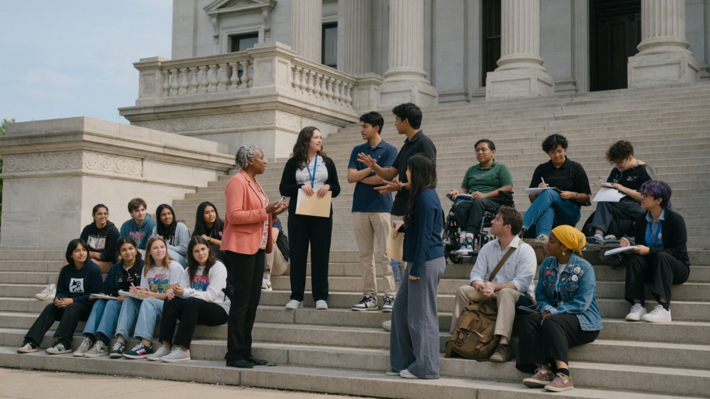

Texas Plan
Tuition waivers
Replicate successful foster youth tuition-waiver models state by state so public college is within reach — not a lottery of zip codes.
National Campaign →We change policy, open college doors, and walk alongside young people from care to independence.
American Foster Futures (AFF) is a national nonprofit founded in Oakland, CA in 2025 dedicated to empowering foster youth by advocating for systemic improvements in state and federal policies and providing nationwide access to educational, housing and transitioning out of care services through virtual and community-based programs.
Foster youth lack access to traditional family and social structures that create the foundation for achieving educational success by graduating from high school, college or trade school. The combination of trauma, unstable living conditions, and fractured support systems leaves too many facing higher rates of homelessness, justice involvement, addiction, and mental health challenges.
We are organized exclusively for charitable and educational purposes under Section 501(c)(3) of the Internal Revenue Code.

From statehouses to STEM labs — advocacy and direct support, side by side.
Replicate successful foster youth tuition-waiver models state by state so public college is within reach — not a lottery of zip codes.
National Campaign →An interstate compact so a waiver earned in one state can unlock similar benefits where a youth is accepted to college in another.
Reciprocity Campaign →
Housing navigation, employment support, education coaching, mental health resources, financial literacy — and a STEM pipeline through The Foundation Program.
Foundation Program →Honesty, transparency, and accountability in every action.
We meet every individual with empathy and honor their potential.
Partnerships that multiply reach and impact.
Belonging, resilience, and opportunity for those we serve.

Meet the leadership committed to advancing opportunity for foster youth.

From our founding in 2025 to building a national movement — milestones that matter.

The full investment case — need, programs, budget, and how your gift expands tuition waivers nationwide.
Donate, volunteer, partner, or share our campaign. Foster youth deserve tuition-free public college pathways and the support to thrive after care.